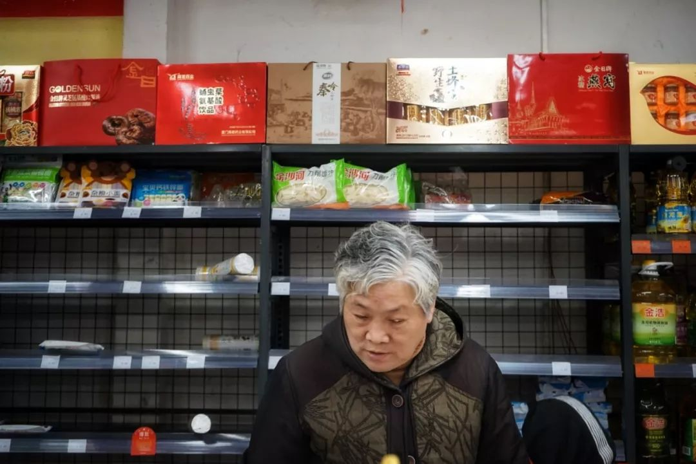
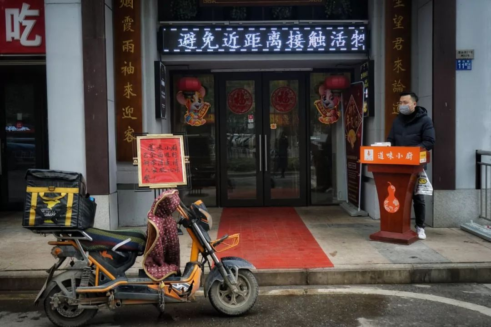
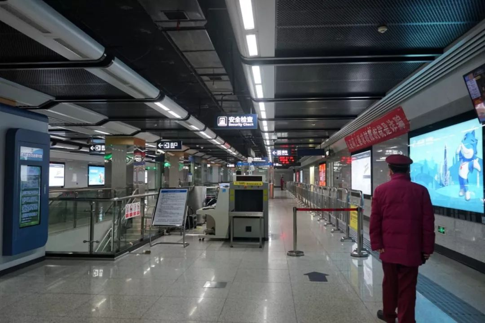

实地探访 | 封城的第一天，武汉怎么样了？
原文链接 备份链接 作者 | 第一财经 吴绵强 周芳 陈益刊 编辑 | 张富贵 为了遏制新型冠状病毒感染的肺炎扩散，按照武汉市新型冠状病毒感染的肺炎疫情防控指挥部通告，自1月23日10时起，武汉全市城市公交、地铁、轮渡、长途客运暂停运营； …


文 | 王彦入 王丹妮 程静之 殷盛琳 李晓芳 周航 叶雯 曾宪雯
编辑 | 王珊 陶若谷
33岁的刘科戴上两层口罩独自走进地铁，夹杂在路人中间。像他这样拉着行李箱的人并不少见，彼此间默契地保持着距离。三天前，他刚刚从北京回到武汉过年，1月23日早晨7点多，刘科又踏上返程的路。
这天凌晨2点，三个朋友电话和持续不停的微信把他吵醒，他点开手机信息，看到武汉市新型冠状病毒感染的肺炎疫情防控指挥中心发布了第一号公告：从1月23日10时起，暂时关闭市内公共交通以及航空和铁路的离汉通道。
他完全失去了睡意，开始刷新闻，还没退掉初五的返程车票，就决定买当天最早的一班高铁离开。6点钟仍未出票，他感觉“要疯了”，又在 12306 官网上买了一张，直到确认出票才安心。下了地铁，他直奔目的地武汉站。
这原本是一个匆忙吵嚷的车站，我国中部最大的交通枢纽之一，每天数万人在此装卸各式各样相聚和离别的人生故事。今年春运，武汉市三大火车站每天发送旅客将近30万人。
据卫健委卫生应急办公室最新消息，截至1月22日24时，全国各个省（区、市）累计报告新型冠状病毒感染的肺炎确诊病例571例，死亡17例，均来自湖北省。
武汉从未这样空旷。天河机场96架航班赶在10点前起飞，剩余的全部取消。汉阳区陶家岭的外卖员一早接了40多个订单，但超市没货送不了，订单取消。武黄高速的出城方向，四股车道全被堵死，而对向车道一辆车都没有。刘科乘坐的返京高铁上，车厢里只有十个人左右，偶尔有小孩哭闹着不想戴口罩。
四个多小时后，列车到站，刘科松了口气，“像是泰坦尼克号最终上岸了”。同时，他又有一种“头等舱乘客一般的羞愧感”——父母、朋友，还有很多人没来得及离开。
距离武汉医院收治第一例疑似新型肺炎病人，已经过去46天。在2020农历新年到来的两天前，常住人口超过1100万的武汉，被一场瘟疫打乱。

1月23日，武汉市内仍有部分餐厅照常营业。一家餐厅门口立起告示牌，“餐厅已全面进行科学消毒，请大家放心用餐”。
离开的，留下的
从这一刻起，可以说疫情终于成了大家的事。原本属于个人的感情，都忽然变成了整城居民的共同感情。
1月23日凌晨两点，还在上海出租屋里工作的陈斌，刷到封城的消息，赶紧电话叫醒武汉家中的父母，让他们准备出发去机场。
几天之前，他就已经决定不回家过年，而是把父母接到上海，为此专门买了个小床。他为这趟出行操碎了心。买了高铁二等座，不放心，改成了一等座，考虑到汉口火车站离海鲜市场太近，又改成飞机。光手续费就花了好几百。
父母乘坐的航班原计划1月23日傍晚6点30分左右起飞，一个半小时后抵达上海。
封城消息再次改变了行程。他一宿没睡，给航空公司和机场打电话。10点前的航班依旧可以起飞。他立即给父母改签当天最早的航班。
早上7点半，父母奔向机场的时候，他在电饭煲里煮好粥，出发去浦东机场。飞机9点抵达上海，测体温、查行李，又花去近两个小时。直到11点，陈斌才见到父母，两个人推着行李车走过来，见面第一件事是洗手——他准备好了免洗的洗手液。
接下来的春节，他们打算在出租屋里度过，“自我隔离，现在在家都戴口罩了。”
根据媒体报道，这天早上10点前，像陈斌父母一样成功离开武汉的，还有很多人。谷歌的一位程序员发朋友圈称，父母原计划这天下午出发来美国，凌晨得到消息后，马上让他们赶到广州买机票，坐上了飞往美国的航班，“感觉跟电影一样魔幻现实”。
一位实习医生的微信群响了一个早上，群里一个朋友说，准备跑了。八点多，朋友和家人已在前往三亚的高速上。另一对年轻夫妇凌晨5点开车离开，他们随身带了75%浓度的酒精消毒液和口罩，走大广高速回福建探亲。出城路上，他们没有被要求检测体温，后来才知道封城的消息。妻子担心，很大一批人也像她一样，没有经过检查就出城了。
这天凌晨两点，同样没睡的另一位武汉媒体人刘玲，看到新闻弹窗，一下从床上坐了起来，她叫醒父亲，去最近的24小时便利店，买速冻饺子、方便面。店内没什么顾客，不久后，陆陆续续进来一些人，几乎都是年轻人。
刘玲的公司几天前就放假了，一个家在黄冈的同事选择留在武汉，怕自己携带病毒，感染家人。也有一名同事深夜去火车站买票，已经坐上驶离武汉的火车。他告诉刘玲，那趟列车的车厢空荡荡的。
45岁的武汉市民李晨醒来才看到新闻，他相信封城是一个正确选择，“保卫整个国家的健康。”
和这座城市里的很多人一样，李晨的第一反应是买菜，他原本以为超市会排起长队，实际没有，价格也没涨，土豆每公斤5元钱，红萝卜7元，西兰花9元。看到网传一些蔬菜价格高涨，他很气愤，认为是P上去的。
距离“封城”的时间越来越近。十点整，全市的城市公交、地铁、轮渡、长途客运全部暂停营运。两百米外的公交总站处，不再有公交车驶出，值班员小张戴着单层口罩，站在门口张望，等待最后几辆公交车回到停车场。今天早上开大会时，他才得知全市公交停运的消息，“领导突然说车不开，司机们就都回家了，也没说什么时候恢复。”
一月的武汉天色阴沉，马路上的公交车逐渐消失，街上行人三三两两，穿一身加绒睡衣，偶尔抬手紧一紧口罩。更多的人扎进了超市和药店里。有人拉着小型推车，有人拎着行李箱，抢购接下来几天的食物和药品。
中午12点，武汉大学法学博士宋可到达超市时，柜台上的菜已经空了，蛋类货架只有几兜破了的鸡蛋，她挑了一兜好点儿的去结账。队伍很长，半个小时左右才到她。
“虽然人非常多，有些拥挤，但是没有吵架，疯抢的情况。”宋可说。

1月23日上午十点，武汉市居民在附近超市购买生活用品，蔬菜在短时间内售罄。
宋可一直留在学校写毕业论文，原本买了今天中午12点回乡的高铁票。但随着确诊人数的增加，她担心去火车站这样人多的地方会被传染，两天前退了回河南老家的票。
前一天，她刚去超市买了挂面、方便面和水果。封城消息出来后，她戴着N95口罩又去附近的超市囤菜。超市昨天还没有任何提醒，今天门口已经贴上“不戴口罩请勿入内”的标识，一名保安在门口把守。没有戴口罩的大叔想要进去，被保安拦下。
超市里人很多，乱糟糟的，每个人都戴着口罩，各式各样，一次性口罩、医用外科口罩、粉红色棉布口罩、N95都有。一个大妈戴了一次性和防尘口罩两层。
回学校的路上，沿街店铺大都关门，有对夫妻在街上拉着两辆红色的小车拍照，小车里是满满的食物。“他们看起来很兴奋，可能有种特殊时期备战的感觉。”
武大宿舍门口已经贴上预防小知识。两天前，宿舍开始消毒。两名管理员每天在楼道、楼梯洒消毒液，非常刺鼻。看到宋可提着两大兜东西回来，宿舍阿姨提醒她：“刚洒了消毒液，注意防滑呀。”
这几天，到处都能闻到臭臭的消毒水味道。封城这天早上，林冉用84消毒液擦了一遍窗户。她住在汉口医院旁边，这是一家发热患者定点就诊医院。一大早，她就听到救护车的警笛声不断。她印象中，以往，汉口医院少有如此大的就诊量。
林冉家已经取消了之前订好的年夜饭，小舅也发来信息，本来准备自驾去江西，一封城，行不通了。朋友约好的电影、饭局也取消了，大家很自觉，相约“不出门”。
她居住的小区，至今没有接到统一的消毒通知，父母是在她的激烈沟通下勉强戴上口罩。

1月23日上午十点，武汉市地铁三号线工作人员正在为地铁停运做最后准备。
医院里的人
1月23日凌晨一点，临睡前，卢晓还在玩《瘟疫公司》。这款7年前问世的游戏这几天突然登上苹果付费APP榜第一名。游戏中，玩家可以让病原体散布到世界各地，从而制造一场超级瘟疫，毁灭世界。当时，卢晓还不知道，一小时后，武汉市新型冠状病毒感染的肺炎疫情防控指挥部，将发布“封城”通告，来应对武汉眼下蔓延开来的疫情。
卢晓两天前刚离开武汉，他在一家三甲医院实习，比普通人知道更多“内部消息”。
2019年12月30日晚，发现疫情的消息便在医务人员内部群传开。在武汉同济、协和医院工作的朋友还向他确认了消息，但没人敢对外说。
医务人员很谨慎，传出来的内部截图越来越少，卢晓没太当回事，毕竟，官方通报里，新型冠状病毒传染力不强，疫情可防可控。
直到1月20日上午。那天，他在病房查房，看到护士拿着N95口罩，全院分发，他领了一个，赶紧戴上。但几个小时后，他从护士长那儿听说，院长通知，为避免恐慌，全员不准佩戴N95，未拆封的N95全部返还，退回医院库房。医务人员只能佩戴普通医用口罩，且根据不同科室，限量供应，有的科室一天最多只能使用一包，有的按人头。
卢晓感觉不对劲。一天前，在北京工作的朋友，发信息询问他，能否回武汉，他的回答依然是“没那么严重”。但现在，他意识到事情正在起变化。
那天之后，消息从四处涌出。也是那个时候，他意识到，疫情比通报中来得厉害。
1月21日一下班，卢晓请假，离开武汉，回到一百五十公里外的家里。这座湖北小城，对疫情的反应速度远低于卢晓预期。就职于医疗系统的父母，认为“没有严重到那种程度”，不愿意戴口罩。卢晓拿出手机，给他们看各类信息，讲述自己的见闻。
父母沉默了，隔了会儿，才缓缓地说，“会戴的”。县里的口罩已经被一抢而空，幸好一年前，家里装修，卢晓买了两箱N95，那时还被父亲责怪“浪费钱”。

1月23日上午十点，武汉市民在某药店内排队购买口罩、消毒水、板蓝根等物品。
武汉很多医护人员已经接到通知，过年留在武汉，保证手机畅通，随时待命。卢晓的一位学姐，昨晚收到了防护服，原本，这个春节，她打算去滑雪。
29岁的王凯在武汉市中心医院待命。1月11日开始，医院各个科室开始征调人员，到发热门诊和金银潭医院等一线支援。很多同事报名，最后去了 15 个，前段时间又增加了几个。同事几乎都在一周前把家里的老人、孩子送回老家，一个人留在武汉。
作为一名工作六年的医生，王凯对“封城”消息并不吃惊。1月21日，国家卫生健康委决定将新型冠状病毒感染的肺炎纳入法定传染病乙类管理，采取甲类传染病的预防、控制措施。当时，就有同事估计，“应该要采取封城这个级别的防控措施了。”
但他没有想到，一切来得这么突然。
武汉市中心医院发热门诊的人多得吓人，每天接诊量超过上千例。王凯注意到，很多发热病人或疑似病例无法得到有效的监测和治疗，他感到无奈，“确实没有办法，医疗资源太紧张。”在他们科室，N95口罩都成了稀缺品，医生们戴的都是医用外科口罩。
如果没有意外，34岁的门诊医生吴妙在今天晚上，接到第一批转运到她所在医院的新型冠状病毒肺炎患者。三天前，她所在的医院被征用为收治患者的定点医院。1月22日一早，装修队入驻医院，将普通病房全部改造成隔离病房，23日下午六点前，就必须完成全部改造。
吴妙说，今天晚上，武汉金银潭医院的患者将陆续转运至各区的定点医院。
确诊的人数越来越多。她的一位亲戚前几天从外地回到武汉，开始发热，但负责确诊病例的金银潭医院人满为患，亲戚进不去，无法确诊，没有医院能收治，只能开点感冒药、打吊瓶，回家自行隔离。类似的情况不止这一例。
这两天，医院每天要开几次会议，对医生紧急培训，加强医护人员的防护意识。她根据自己的临床经验，以及和同行们的交流判断，“大家看网上可能几百例，但全武汉这些定点医院加起来几千张病床估计都有点不够。”
另一个缺口是，医院的防护服和防护口罩严重不足。吴妙所在的医院近一半医护人员没有领到防护服，只有一身白大褂加一层医疗口罩。他们屡次向医院主任申请，主任只说，在今天晚上病人运到医院之前，会给每个人发放防护服和口罩。
武汉城里待产的准妈妈们，现在不知道是否该去医院进行产检。封城这天，一个纠结的孕妈被老公拉出了门，他们去的是一家小医院，没有发热门诊，一层楼只有她一个病人。预产期在下个月的叶思思就没这么幸运了，她做产检的湖北省妇幼保健院是全市61家发热门诊医疗机构之一。丈夫跟她商量，要不然换一家人流量少点的医院。叶思思想，现在武汉还有哪家医院能少得了病人？
武汉还未封城之前，他们也曾考虑过回老家待产，叶思思还是犹豫，“当时考虑了几点，第一老家的医疗情况肯定没有武汉好。另外不知道自己身体是个什么情况，万一传染了别人呢。而且也不确定老家是不是就更安全，很多在武汉工作的人，春节本来就要回老家。”
1月22日，叶思思发了一条微博，“作为一名在武汉待产的孕妇……好方（慌）。”刚发出去，就有好几个同样焦虑的即将到预产期的准妈妈给她留言。一个临近预产期的准妈妈说，因为武汉封城，之前请的月嫂、催乳师也不太可能从外地赶回来了。
产科主任李家福所在的武汉大学中南医院，也已成为发热患者定点诊疗医院。李家福说，目前医院百分之八九十的门诊精力投入到了新型肺炎，其他门诊一般已经不收治病人。但产科例外，下午2点，他的专家门诊照常进行，70多张病床目前都满了，整个医务团队很镇定，但他建议，不是必须的检查现在可以不来医院，“比如28周之前，每4个星期1次的定期检查，现在特殊时期，可以延长到6个星期一次。”

1月23日，武汉市某小区内，工作人员正在进行日常消毒。
“围城”之下
封城的消息比孙慧文预想的来得要快。早在一个月多前，第一个新型冠状病毒肺炎患者被发现时，即便是读新闻系的孙慧文，也觉得“这不过是一条普通的社会新闻”。半个多月后，当朋友圈开始传疑似“病情通报”的红头文件时，孙慧文依旧坐在拥挤的地铁里，去培训机构上课，准备公务员考试。
空气中没有消毒水的味道，一切依旧如常。直到1月14日，父亲醉到休克，她带父亲去了距离华南海鲜市场仅1.6公里的医院——武汉市中心医院后湖院区，凌晨的急诊室让她第一次感到震惊。
急诊大厅里人声鼎沸，床位靠抢，医生戴着防护面罩，四处走动。一名医生说：“本来就多加了四十多名流感患者，还有三个喝醉的跑来凑热闹。”在那之后，她提醒爸妈出门一定要戴口罩，把口罩放在他们包里当“护身符”，但口罩却从未被打开过。
低估疫情的不仅是孙慧文的父母。和很多普通的武汉市民一样，住在光谷软件园附近的陈晓雨对这场肺炎的蔓延也不敏锐。12月底传出消息后，身边最大的变化仅限于每天早上到公司能闻到臭臭的消毒水味道，但路上很少见到有人戴口罩。
态度的转变似乎是在钟南山院士接受央视采访。1月20日，陈晓雨明显感觉到身边防护措施增多：公司每天早晚都会对角落消毒，进出门有工作人员组织量体温，先用测温仪量额头温度，如有异常会再用体温计检测一次，连路边上摆摊的小贩和出租车司机也戴上了口罩。
如今，口罩已经成为稀缺的物资。据第一财经报道，拼多多成立了一个找口罩团队，发动所有采购员在全国范围内寻找口罩供应商，1月21日晚间上的2000个库存，很快就卖空了。阿里在1月23日凌晨3点接到来自武汉的紧急求助电话：N95级别口罩，二级以上医用防护服，二级以上医用护目镜，重点区域每天消耗2000套，预估备货100天，总计需要20万套。
22日启程回家，陈晓雨提前两个多小时就到了车站，她一刻也不想在武汉多待了。车站里，遮住口鼻的人们比平常要安静许多，大多在低头查看手机讯息。因为赶路没有吃早饭，本来想到车站再买点东西垫肚子，但她怕摘下口罩就会被感染，一直到出了恩施站才买了碗豆皮。
她的家乡在恩施州的乡下，转车回镇上，再转到村庄的路上，她发现镇上的口罩卖完了，“到了村里根本没人戴。”为了避免传染给家人，她一直戴着口罩，但劝说父母，他们总显得不耐烦。除她之外，村里至少还有4人是从武汉回乡过节的，他们走亲串友，陆续贴了春联，大家仍然期待着一个热闹的春节。
回到恩施州的还有在北京实习的小曾。她回家后第一件事就是洗头洗澡，用消毒液洗衣服。小曾只在武汉短暂停留了一天，姐姐生了二胎，原本打算去看看。1月19日从北京到武汉时，官方通报武汉感染者有62例，第二天一早就变成198例，“没想到一夜激增这么多”。她马上取消了去姐姐家的计划，改签21号的票回到恩施老家。
到家的第二天晚上，在村医院工作的婶子被连夜召去开了三个会，婶子告诉她，州里下了指示，如果因为工作不到位引发严重后果，干部要直接写辞职报告，严重的送到司法部门。第二天一早，她就开始被村里盘问，什么时候回来的，有没有经过武汉，有没有发热，有没有咳嗽，后期要持续跟踪她的身体情况。
回家后，小曾一直战战兢兢。她有点感冒，平常不爱吃药但这次赶紧买了药，时时监测体温。过完春节，她要返回北京的公司工作，因为在武汉停留过，要在家短暂隔离。
武汉本地人何璐就职于武汉一家报社，母亲在药店工作，防护意识高于普通人。前几天，一家人出门，“只有我们戴着口罩”，但现在，药店的酒精、消毒液都卖完了。进价三块的消毒产品涨到了五块，更别提口罩，全面脱销。

1月23日上午十点，武汉市居民在附近超市购买生活用品。
原本在一家大型连锁餐厅订好的年夜饭也取消了。起初餐厅不给退，后来退订的食客越来越多，集体跑去餐厅闹，才给解决。这两天，奶奶感冒了，爷爷也开始低烧，一家人紧张起来，给何璐打电话，大年三十晚上的拜年也取消了。
封城之后，武汉这座城市陷入一种前所未有的复杂情绪。有人在社交网络晒出物价飞涨的图片，立马就有评论回复，“物价总能恢复的”；高速路上的私家车出城的车辆排起长队，在网上被痛斥不负责任，“好好在武汉待着，不要出来祸害人。”傍晚，高楼的窗户里陆续亮起灯光，照亮身处“围城”，前途未知的无数面孔。
孙慧文的父母自觉戴上了口罩，但父亲依然会去华南海鲜市场2.5公里外的一个菜市场买菜，外公照常出门锻炼。封城的消息对父母似乎没有影响，“他们还把我当成一个小孩，觉得我的（告诫）有点可笑。”孙慧文说。今天早上，她去了药店，有导购人员咳嗽，却未戴口罩；结算时，排在前面的老人也在咳嗽。回到家后，她彻底崩溃了，抱着父亲大哭了一场。
那一刻，她只想离开这个城市。
半个月前，身边陆续有朋友离开武汉，但知名学者邓晓芒没打算走。学校很早就下发了通知，避免外出，尤其避免聚会。这点对他没有太大影响。他正在写一部专著。之前看了大半年的资料，今年二月开始动笔。他71岁了，身体、思维大不如前，也不再像年轻时候那般能熬夜，“年纪到这个时候了，来日无多，有一种紧迫感，想干的事情，要尽快干完。”
他也听说了疫情，前几天买了些口罩，放家里备着。今晨，听说封城消息，爱人一大早出门买了一批生活用品。他庆幸的是，学生早已离校。
邓晓芒不会开车，封城后公交、地铁停了，他就想，万不得已要出门，就走路、骑自行车，但大多时间，他都待在家里，看书、写书。日子如常。“对我没什么影响，本来也没有团年、出行计划”，邓晓芒说。
2488公里之外的黑龙江绥化，武汉大学大三的女孩在暮色中放下了电话，“久违地平静了下来”。她的男朋友是武汉本地人，在电话那头像之前的很多天一样，对她倾诉疫情有多严重，家里囤了多少食物，自己有多害怕。自疫情开始后，她每天起床的第一件事就是给他打个电话或者发个信息。
她想起很多两人之前的承诺。“他说过要带我回家喝排骨藕汤，要和我牵手一起看樱花，要和我去汉街吃那个总排队的欧包，还说要带我去吃老爷爷做的肉圆。”女孩只能不停许愿疫情早点过去，回到第一次见到他的时候那样：天空下着小雨，耳边是大妈们暴躁的武汉话，空气中飘着荆州锅盔的香味。他笑着说，要带着她一起去吃街道口排名第一的火锅。
1月23日下午两点30分左右，京港澳高速武汉西、北等收费站口，及其他出武汉的高速公路口陆续关闭。下午4时，交通部发出紧急通知，暂停进入武汉的道路水路客运班线发班，前往武汉途中的营运车船，立即组织载客返程，不同意返程的旅客，可以在安全地点停靠下客。
那时，刘科早已到达北京。被出租车司机问到从哪里来时，他回答，“上海。”他也说不清自己怎么想的，只是不想被人知道来自武汉。
（除李家福、邓晓芒外，文中人物为化名。张颖钰对本文亦有贡献）
版权声明：本文所有内容著作权归属于搜狐享有，未经搜狐书面许可，不得转载、摘编或以其他形式使用，另有声明除外。
后台回复”读者群”, 加入更多讨论

小昼
微信扫一扫赞赏作者 赞赏
长按二维码向我转账
受苹果公司新规定影响，微信 iOS 版的赞赏功能被关闭，可通过二维码转账支持公众号。
原文链接 备份链接 作者 | 第一财经 吴绵强 周芳 陈益刊 编辑 | 张富贵 为了遏制新型冠状病毒感染的肺炎扩散，按照武汉市新型冠状病毒感染的肺炎疫情防控指挥部通告，自1月23日10时起，武汉全市城市公交、地铁、轮渡、长途客运暂停运营； …
原文链接 备份链接 ********** *****他们很想回家，和孩子最近一次见面还是暑假。但谁也不敢回去。“万一有什么事，也不能把病毒扩散到别处，是不是？” ***** 6时35分，汉口站广场上，一队警务人员正在开会。 新京报记者 …
原文链接 备份链接 历史上，很多置人于死地的病毒并不是被人类消灭了，而是人类和它们分开居住了。 记者 | 吴洋洋 许冰清 刘娉婷 郑晶敏 郭苏妍 邓舒夏 数据资料整理 | 王一越 图表制作 | 程 星 确诊人数出现激增72小时之后，武汉 …
原文链接 备份链接 【财新网】（记者 黄蕙昭）一则半夜发布的“封城”通告惊动全国，也拉开武汉肺炎防疫之战新势态。1月23日凌晨两点，武汉市新型冠状病毒感染的肺炎疫情防控指挥部通报宣布，今日10时起，武汉公交、地铁、轮渡、长途客运暂停运 …
原文链接 备份链接 20190414于武昌 2020年1月23日。 农历腊月二十九。 武汉封城第一天。 一觉醒来，收到短信： “自2020年1月23日10时起，全市城市公交、地铁、轮渡、长途客运暂停运营；无特殊原因，市民不要离开武汉， …